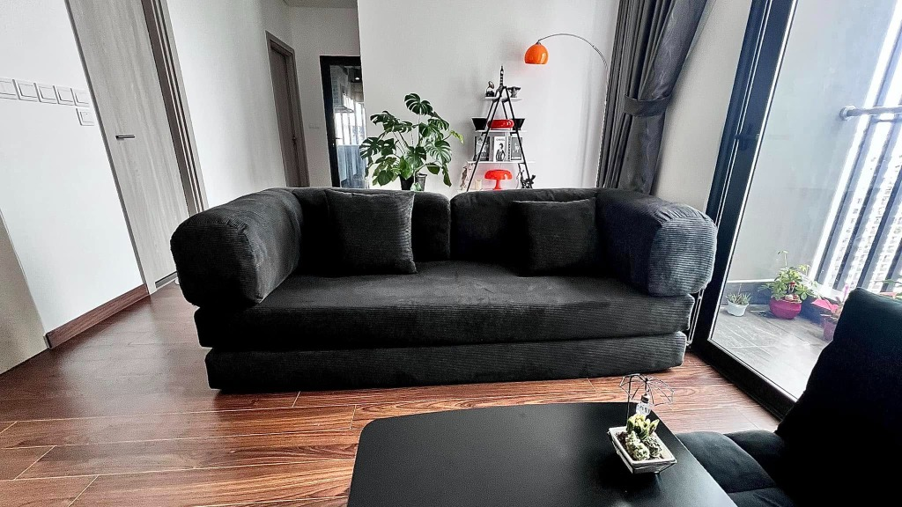
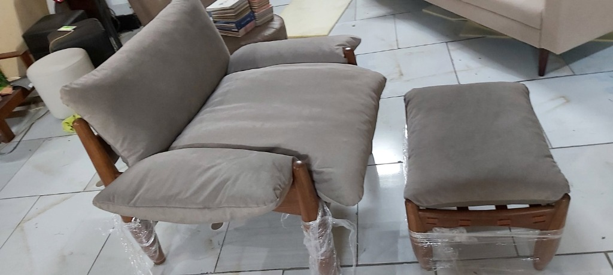
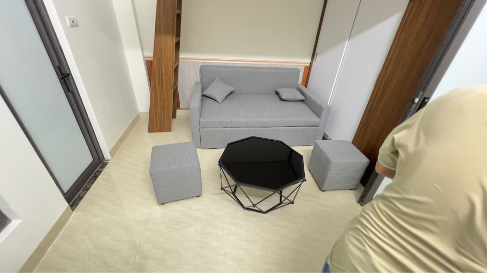
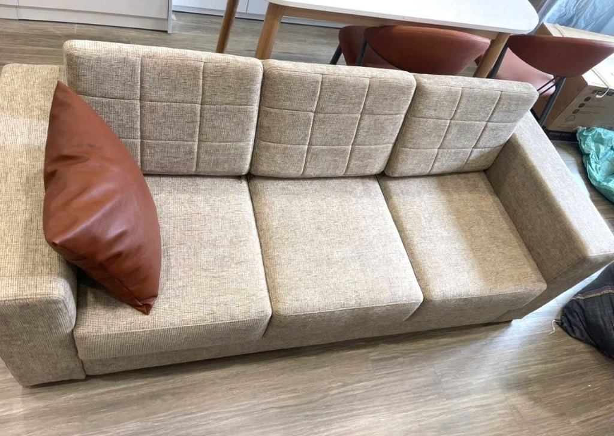
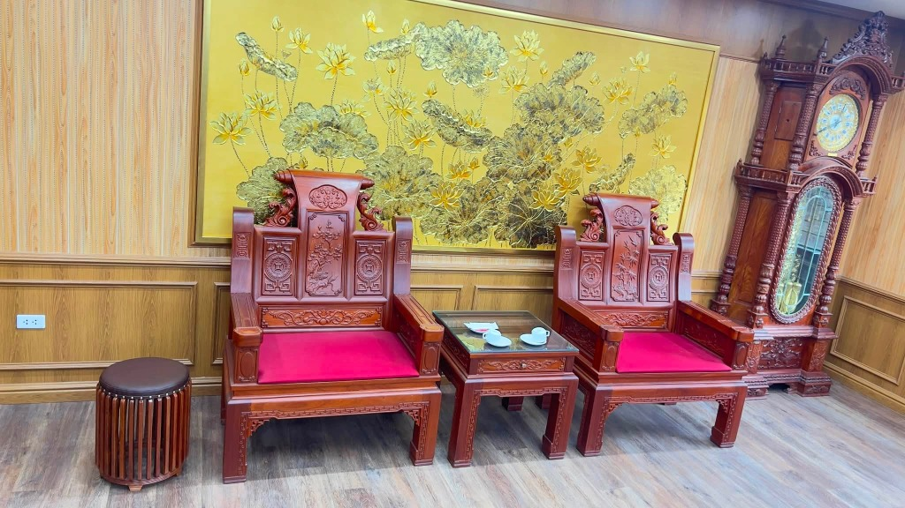
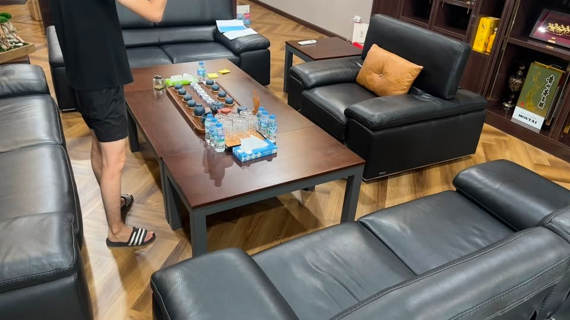
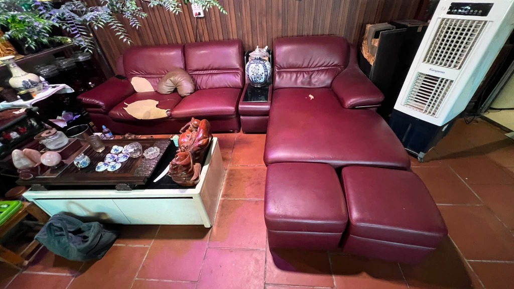

Mỗi sản phẩm là tâm huyết của những người thợ lành nghề xưởng sản xuất Sofa Hà Nội, chụp trực tiếp tại nhà khách hàng sau khi bàn giao nghiệm thu.

Bàn giao Căn Hộ Chung Cư Cao CấpThiết kế tay bo tròn bản lớn êm ái, bọc chất liệu nhung tăm/nhung gân dệt dày chống bám bụi, đệm mút nguyên khối đàn hồi cao cấp.

Chế tác thủ công tại xưởngKhung gỗ sồi tròn tiện bóng mịn bo góc, đệm mút bọc da nỉ màu be xám siêu êm, gối đỡ lưng và tay vịn lượn cong ôm trọn cơ thể khi đọc sách.

Bàn giao Căn Hộ Duplex / StudioMay đo chuẩn theo kích thước góc cầu thang căn hộ nhỏ gọn, chất liệu nỉ thô xám bạc trẻ trung, tích hợp đôn ngồi tiếp khách linh hoạt.

Bàn giao Phòng Khách Liền BếpTựa lưng may rút rãnh ô vuông tạo độ êm nâng đỡ cột sống, chất liệu nỉ gai cao cấp chống xù lông, điểm xuyết gối da bò nâu đất đối lập sang trọng.

Bàn giao Nhà Phố Long BiênKhắc nổi hoa sen cẩm tú, đệm nhung đỏ quyền quý phối hợp cùng bức phù điêu sen vàng và đồng hồ cây gỗ sang trọng bậc nhất.
 Bàn giao Căn Hộ Vinhomes
Bàn giao Căn Hộ Vinhomes
Chạm khắc hoạ tiết baroque tỉ mỉ mạ bạc, đính hạt cúc đá lấp lánh, đệm mút lò xo đàn hồi cao siêu êm và đẳng cấp cho phòng khách lớn.

Bàn giao Văn Phòng Doanh NghiệpThiết kế tay vịn vuông vức bề thế, gối tựa cam điểm nhấn tương phản, bố trí đối xứng trang trọng cho các buổi tiếp đón đối tác ngoại giao.

Bàn giao Nhà Phố Thanh XuânTone màu đỏ mận thịnh vượng ấm cúng, thiết kế góc nằm thư giãn xem phim, kèm 2 đôn ngồi phụ linh hoạt cho gia đình đông người.
Đảm bảo từ ý tưởng bản vẽ đến sản phẩm thực tế hoàn thiện 100% đúng chuẩn.
Thợ kỹ thuật mang mẫu da nỉ đến tận nơi đo đạc diện tích phòng khách, tư vấn phong thủy và chốt kiểu dáng phù hợp nhất.
Khung sồi, thông hoặc keo đã qua hấp sấy chống mối mọt. Khách hàng được ghé xưởng kiểm tra khung trước khi bọc.
Lớp đệm mút Nhật Bản hoặc Việt Nam kết hợp lò xo trợ lực. Thợ may tay nghề trên 10 năm may đường chỉ đôi sắc sảo.
Vận chuyển, bọc bọc cẩn thận, lắp đặt hoàn thiện tại nhà, khách hàng hài lòng mới thanh toán toàn bộ chi phí.
"Bộ sofa tân cổ điển hoàng gia đóng xong giao đến nhà đẹp y như bản vẽ 3D, thậm chí màu da bò bên ngoài nhìn còn sang trọng và dày dặn hơn cả hình chụp. Giá lại rẻ hơn hẳn ra phố nội thất hỏi."
"Bộ bàn ăn 8 ghế da đinh tán giao đúng hẹn hôm tân gia. Đóng khung gỗ chắc nịch, da êm không có mùi hôi nhựa như hàng chợ. Thợ xưởng nhiệt tình bốc vác lên tận tầng 2."
"Mình làm sofa văn phòng cho công ty, rất ưng ý vì được trực tiếp qua xưởng xem thợ mộc đóng khung gỗ và thử đệm mút trước khi bọc da. Quy trình rất chuyên nghiệp, có hóa đơn bảo hành đầy đủ."
Chọn nhanh thông số bạn muốn đóng, hệ thống sẽ gom tin nhắn gửi thẳng tới Zalo xưởng để thợ tư vấn báo giá ngay.
Tất cả thông số bạn vừa chọn sẽ được tự động định dạng và chuyển trực tiếp tới Zalo xưởng: 0985.451.396
Tổng hợp những băn khoăn phổ biến nhất của khách hàng khi đặt đóng sofa trực tiếp tại xưởng sản xuất.
Có, tiết kiệm từ 20% - 30% chi phí. Khi làm việc trực tiếp với xưởng, bạn không phải chịu các chi phí phụ như thuê mặt bằng showroom phố lớn, nhân viên bán hàng trung gian hay khấu hao hàng trưng bày.
Đặc biệt, bạn kiểm soát 100% chất lượng từ bên trong (gỗ, đệm mút, lò xo) và may đo chuẩn xác theo từng centimet phòng khách nhà mình.
Thông thường từ 3 đến 7 ngày làm việc tùy thuộc vào độ phức tạp của mẫu mã (sofa góc hiện đại thường nhanh hơn dòng sofa tân cổ điển rút quả trám thủ công).
Xưởng cam kết giao đúng tiến độ theo hợp đồng và hỗ trợ giao gấp trong 3 - 4 ngày đối với các gia đình cần dọn về nhà mới gấp.
• Sofa Da (Carola, Microfiber, da bò): Sang trọng, chống bám nước, không thấm bụi bẩn, cực kỳ dễ lau chùi khi đổ nước hoặc sữa. Rất thích hợp với nhà có trẻ nhỏ hoặc phòng bật máy lạnh thường xuyên.
• Sofa Nỉ / Vải nhung: Êm ái, mềm mại, thoáng mát vào mùa hè, hoa văn trẻ trung ấm cúng. Hiện nay xưởng có thêm dòng nỉ hạt trượt nước cao cấp giúp chống bám bẩn hiệu quả.
Đệm mút là linh hồn quyết định độ êm ái và giữ form của sofa. Mút rẻ tiền (T25, mút ép vụn) rất nhanh bị xẹp lún chỉ sau vài tháng ngồi.
Xưởng sử dụng Mút nguyên khối D40 hoặc Mút Nhật Bản với tỷ trọng bọt cao, độ đàn hồi tuyệt hảo. Khi đứng dậy, đệm sẽ lập tức hồi hương lại trạng thái ban đầu, cam kết chống xẹp lún và bảo vệ cột sống tối đa.
Rất khuyến khích! Xưởng luôn mời khách hàng ghé thăm xưởng tại làng nghề sản xuất nội thất để tận mắt sờ thử gỗ sồi tự nhiên, ngồi thử khối đệm mút và xem thợ may đo trước khi bọc da hoàn thiện.
Với khách hàng ở xa, xưởng sẽ quay video cận cảnh chi tiết khung sườn và kết cấu gửi qua Zalo trước khi bọc.
Hoàn toàn MIỄN PHÍ! Bạn chỉ cần để lại số điện thoại hoặc đặt lịch, kỹ thuật viên của xưởng sẽ mang theo quyển mẫu da nỉ (hơn 500 màu sắc) và thước dây đến tận nhà khảo sát không gian, tư vấn kích thước phong thủy chuẩn xác nhất.
Xưởng cam kết chính sách bảo hành minh bạch bằng phiếu bảo hành điện tử và giấy tờ rõ ràng:
• Bảo hành khung sườn gỗ: Từ 5 đến 10 năm (chống cong vênh, gãy sập, mối mọt).
• Bảo hành đệm mút & hệ thống lò xo: 3 đến 5 năm không xẹp lún.
• Bảo hành chất liệu da nỉ: 1 đến 3 năm (chống nổ da, bong tróc).
• Bảo trì trọn đời: Hỗ trợ làm sạch, bọc lại da mới với giá gốc dành riêng cho khách hàng cũ của xưởng.
Kỹ thuật viên xưởng mang mẫu da nỉ tận nơi đo đạc miễn phí hoặc quý khách có thể ghé trực tiếp xưởng sản xuất để trải nghiệm.
Thợ kỹ thuật xưởng mang đầy đủ mẫu da bò, da công nghiệp Carola, nỉ nhung và thước dây đến tận nhà khảo sát miễn phí.
Quý khách có thể ghé trực tiếp xưởng bất kỳ lúc nào để xem gỗ, thử đệm mút và xem thợ làm sofa thực tế.